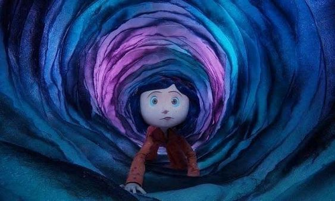
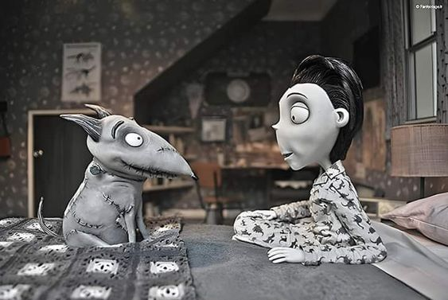
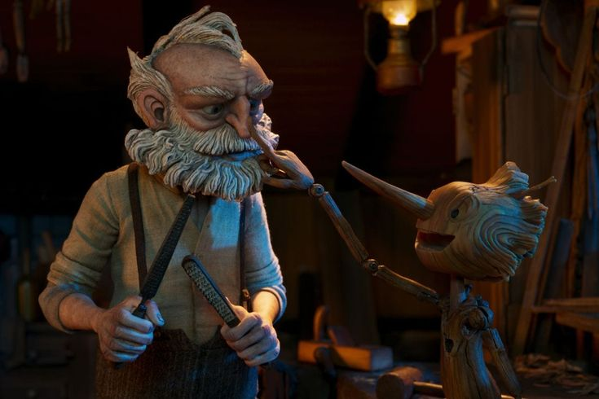

O Estranho Mundo de Jack (1993)
Um filme em stop-motion norte-americano, do gênero fantasia musical, coescrito e produzido pelo renomado Tim Burton e dirigido por Henry Selick, conta a histótia do infame dia em que a Cidade do Halloween abriu uma porta para a Cidade do Natal.Tudo se inicia após Jack Skellington se cansar das repetiçoes anuais em relação ao Dia do Halloween, e andando pela floresta totalmente pensativo sobre como mudar esta data, se depara com uma árvore de natal, na qual fica completamente encantado e enfim decide "O Natal é NOSSO!".
A noiva Cadáver (2005)
O fime de animação, também produzido por Tim Burton, que foi indicado ao Óscar, retrata a história do jovem Victor Van Dor, destinado a se casar com a filha de dois aristocrátas falidos, a doce Victoria Everglot. No entanto, no dia da cerimônia, Victor é vencido pelo nervosismo e acaba errando os votos, o que o faz fugir em direção a floresta na tentativa de se acalmar. Na quietude do lugar, ele declara os votos com perfeição, e coloca a aliaça no que parecia um simples galho velho, mas acaba despertando o cadáver de uma noiva enganada.
O Fantástico Senhor Raposo (2009)
Esta animação, que foi inspirado em um livro infantil de Roald Dahl, mostra a rotina do Srº Raposo, que ganha a vida com o roubo de galinhas em fazendas vizinhas, porém com a Srª Raposa grávida de sua 2ª gestação, ele acaba prometendo largar este ramo e inicia sua carreira como colunista em um jornal. Entretanto, por morarem em uma colina tão próxima das fazendas, acaba voltando a velha vida de roubos. Mas desta vez, um trio de fazendeiros se unem para capturá-lo.
Coraline e o Mundo Secreto (2009)

Coraline primeiramente foi um livro de terror publicado em 2002, tendo como autor o britânico Neil Gaiman, e chegou a ser comparado com Alice no País das Maravilhas devido ao surrealismo e a realidade alternativa. Nesta animação, acompanhamos uma adolescente com excêntricos cabelos azuis, guiada pela curiosidade e uma boa pitada de tédio, que encontra uma pequena e estreita porta no conhecido Palácio Rosa. Graças a sua insistência, ela consegue que a chave única seja encontrada e enfim abre a minúscula portinha, que revela uma parede velha de tijolos. Mas a realidade, é que a porta para um mundo secreto dominado pela Bela Dama, é enfim aberto. Coraline precisará ser mais esperta que 150 anos de perversidade.
Paranorman (2012)
Um filme estadunidense, do gênero comédia, foi o primeiro em stop-motion a usar uma impressora colorida 3D, trazendo evolução neste estilo de filme. A história mostra um menino de 11 anos, chamado Norman, que possui a habilidade de conversar com os mortos. No dia que seu tio, um homem estranho e isolado, morre, ele avisa a Norman que será preciso que ele realize um ritual no cemitério antes do pôr do sol, para evitar uma tragédia. Mesmo desconfiado, ele vai até a casa de seu falecido tio e pega o livro ritualístico, porém antes que consiga ler, o valentão de sua escola o impede, fazendo com que uma tempestade fantasmagórica com a silhueta de uma bruxa apareça no céu, convocando os mortos para surgirem como zumbis. Mas a bruxa enfurecida foi apenas uma garotinha condenada injustamente anos antes. Norman precisará encontrar um jeito de libertar seu espírito amargurado.
Frankenweenie (2012)

O longa-metragem conta a história do garoto Victor Frankestein, que perde seu cachorro de estimação em um acidente. Incorformado com a partida de seu melhor amigo, Victor se apega a uma aula de bioeletricidade que seu professor de ciências realizou, tentando trazer seu cachorro de volta a vida. Mas a história acaba se espalhando entre seus amigos e colegas de classe, fazendo com que todos queiram ressucitar seus mascotes.Este filme recebeu muitos comentários positivos, sendo classificado como uma história assumidamente excêntrica.
Pinóquio (2022)

Nessa última animação, mostraremos a versão de Guilherme del Toro, que trás uma trama de fantasia sombria. Foi anunciada inicialmente em 2008, porém o projeto entrou no "inferno do desenvolvimento", período em que fica estagnado.Somente em 2018, após ser adquirida pela Netflix é que o projeto enfim seguiu adiante, estreando em outubro de 2022 e por fim ganhando o Oscar de Melhor Filme de Animação . Guillermo del Toro reinventa o conto clássico da marionete de madeira que é magicamente trazida à vida para consertar o coração de um entalhador de madeira chamado Gepeto. Um filme com ensinamentos valiosos.